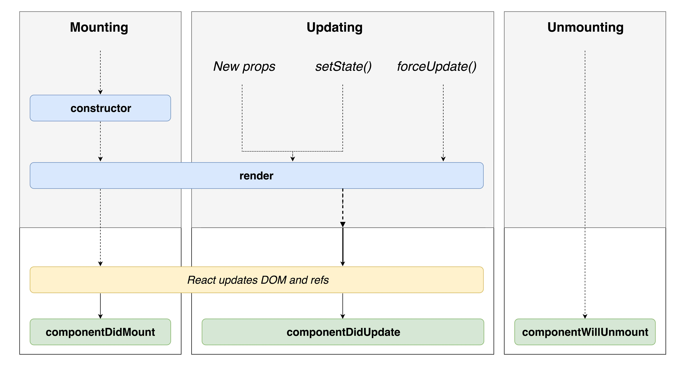

React Class Components (Optional)
What will we learn today?
- Class Components
- State in Class Components
- Unmounting
- Class Component Lifecycle
- Fetching Data with Class Components
Class Components
So far we have looked at components which are just functions (which are called function components), but there is another way of creating React components using the class keyword. Let's look at an example (interactive example):
import React, { Component } from 'react';
// Class component
class Greeting extends Component {
render() {
return (
<div>Hello</div>
);
}
}
// Function component
const Greeting = () => {
return (
<div>Hello</div>
)
};
Instead of getting props through the first argument of the component function, the class component gets props from this.props (interactive example):
class Mentor extends Component {
render() {
return (
<div>{this.props.name}</div>
);
}
}
Here are the steps to follow to convert from a function component into a class component:
- Import the
Componentvariable by changing the React import to:import React, { Component } from 'react'; - Create a new
classthat extends the component:class MyComponentName extends Component {} - Inside the class, create a render method:
render() {} - Copy and paste the contents of the function component into the
rendermethod - Replace any references to
propswiththis.props - Delete the old function component
| Exercise |
|---|
1. Open the pokedex React application that you created last week. |
2. Convert the Logo component from a function component into a class component. |
3. Convert the CaughtPokemon component into a class component. |
4. Convert the BestPokemon component into a class component. |
When you should use function components or class components?
Classes are an older method for creating components in React. Even though they are older, they will still continue to work for a long time. Because of this, there are many React components written using classes. You will likely still encounter them when developing with React.
Before Hooks were released classes were the only way to access state and lifecycle (similar to effects). The rule of thumb now is that new components should be written using function components with Hooks, but class components don't need to be updated.
Class Methods
Class methods are similar to nested "handler" functions inside function components. Let's take a look at an example (interactive example):
import React, { Component } from 'react';
class Hello extends Component {
sayHello = () => {
console.log('Hello from Hello component!');
}
render() {
return (
<button onClick={this.sayHello}>Say hello</button>
);
}
}
Unlike nested functions, we can't use just the name of the function in the onClick prop. We have to use this first, because the method is attached to the class.
Notice how we use a slightly different syntax for the sayHello method than the render method? There is a reason for this, but it is quite complicated and mostly irrelevant. The rule of thumb is to always use this syntax:
methodName = () => {
// ...
}
Except for the render method (and a handful of others which we'll talk about later).
| Exercise B |
|---|
1. Open the pokedex React application and open the Logo.js file. |
2. Add a method named logWhenClicked to the Logo component (hint: remember to use the correct syntax). |
3. Within the logWhenClicked method, console.log a message (it doesn't matter what the message is). |
4. Add a onClick handler to the <img> that will call this.logWhenClicked (hint: look at the Hello component above). |
| 5. In your web browser, try clicking on the image. What do you see in the JavaScript console? |
State in Class Components
Accessing state in class components is a bit different than with function components. We're going to use the Counter component we looked at previously:
import React, { useState } from 'react';
function Counter() {
const [count, setCount] = useState(0);
function increment() {
setCount(count + 1);
}
return (
<div>
Count: {count}
<button onClick={increment}>Click me!</button>
</div>
)
}
Now let's look at the equivalent version in a class (interactive example):
class Counter extends Component {
state = {
count: 0
};
increment = () => {
this.setState({
count: 1
});
};
render() {
return (
<div>
Count: {this.state.count}
<button onClick={this.increment}>Click me!</button>
</div>
);
}
}
There's a lot going on here! Let's break it down into pieces.
State initialisation
Unfortunately, React prevents us from using useState inside class components and we have to use alternatives. To initialise state we have to assign a class property called state:
class Counter extends Component {
state = {
count: 0
}
}
This creates a new state variable called count. Any value you assign will be the initial value of the state variable, so here we initialise to 0.
Unlike useState, you can initialise multiple state variables at once, like this:
class Counter extends Component {
state = {
count: 0,
isCountingDown: false
}
...
}
Defining the increment handler function
Another difference in the class is that we don't define a "normal" function as the increment handler function. We also don't define it inside the render method, as you might expect.
Instead we define increment as a class method (see above for a reminder):
class Counter extends Component {
...
increment = () => {
...
}
...
}
This also means that we have to change how we use the handler function in our JSX:
class Counter extends Component {
...
render() {
return (
<div>
...
<button onClick={this.increment}>Click me!</button>
</div>
);
}
}
Accessing state variables
Since we can't use useState, it also means that we don't have access to the count variable. Instead our count state lives inside this.state:
class Counter extends Component {
...
render() {
return (
<div>
Count: {this.state.count}
...
</div>
);
}
}
We have just swapped count with this.state.count. Otherwise it works exactly the same.
Updating state with this.setState
The final piece is how we update state variables. Again, because we can't use useState, we don't have access to setCount. Instead we use a special function called this.setState:
class Counter extends Component {
...
increment = () => {
this.setState({
state: 1
})
}
...
}
This function is similar to setCount because it does two things:
- Updates the state variable
- Triggers a re-render
One difference is that this.setState can update multiple state variables at once:
this.setState({
state: 1,
isCountingDown: true
})
Updating state based on previous state
You may have noticed that our Counter app isn't very useful. It can only count to 1! This is because this.setState has one more difference: if you need to update some state based on the previous state, then we need to pass a callback instead of an object (interactive example):
class Counter extends Component {
state = {
count: 0
};
increment = () => {
this.setState(previousState => {
return {
count: previousState.count + 1
};
});
};
render() {
return (
<div>
Count: {this.state.count}
<button onClick={this.increment}>Click me!</button>
</div>
);
}
}
Now we can count up as much as we like!
This is because React can "delay" this.setState executing for performance reasons. By using a callback function, we ensure that we are computing the new state with the correct version of the old state and not an outdated one. This problem is one of the reasons why useState was created.
Recap
Let's recap what we've learnt about React state:
- We initialise state by assigning a
stateclass property to an object with whatever initial state we want (e.g.{ something: 'hello' }) - We can read or render state by using the
this.statevariable (e.g.this.state.something) - We can change state using the
this.setState()method and by passing the piece of state we want to update (e.g.this.setState({ something: 'hi' })) - If we need to read the previous state to be able to calculate the new state, then we must use a callback function with
this.setState()(e.g.this.setState((previousState) => { return { something: previousState.something + 1 } }))
| Exercise |
|---|
1. Open the pokedex React application and open the CaughtPokemon.js file. |
2. Set the initial state by assigning the state class property to an object. Then make the initial state have 0 caughtPokemon. |
3. Change the CaughtPokemon component to render this.state.caughtPokemon instead of hard-coding 0. Do you expect anything to have changed in your web browser? |
4. Add a <button> with the text "Catch Pokemon" to the CaughtPokemon component. |
5. Create an catchPokemon method within the CaughtPokemon class. |
6. Add a onClick handler to the <button> we just created that will call the catchPokemon method. |
7. Within the catchPokemon method, use this.setState() to change caughtPokemon to 1. |
8. Update the catchPokemon method to increase the number of caughtPokemon by 1 every time the button is clicked (hint: we need to use the previous state to calculate the new state). |
Unmounting
So far we've looked at components that are always rendered in the browser. However (and this is often the case in large applications), we might want to control whether components are shown or not. Let's look at a Toggle component (interactive example):
const Message = () => (
<p>I'm shown when this.state.isShown is true ✅</p>
);
class Toggle extends Component {
state = {
isShown: false
}
toggle = () => {
this.setState((previousState) => {
return { isShown: !previousState.isShown }
});
};
render() {
return (
<div>
{this.state.isShown ? <Message /> : null}
<button onClick={this.toggle}>Toggle</button>
</div>
);
}
}
If you open up dev tools, you will see that the element changes based on the isShown state. The hidden element is not hidden with CSS, it is actually removed from the DOM. This is because this.state.isShown is false which means the Toggle component returns null for that part of the JSX. If you return null in JSX then React will render nothing at all.
Class Component Lifecycle
When a class component is within the DOM, we call it mounted. When a component is removed from the DOM, we call it unmounted. When we change state like in the unmounting example above, we can switch between these statuses. This gives us a clue that components go through a lifecycle of different statuses. We have seen 2 of the statuses: mounting and unmounting, there is also a third called updating.
We can hook into this lifecycle through special component methods that are added by React's Component class. They are run at different points of the lifecycle, often before and after they change to a different status. The method names contain will or did based on whether they run before or after a status change.
This diagram shows the React component lifecycle:

Let's look at how we can use one of the lifecycle methods (interactive example):
class Lifecycle extends Component {
componentDidMount() {
console.log('componentDidMount');
}
render() {
return <div>Hello World</div>;
}
}
| Exercise |
|---|
1. Open the pokedex application that we have been working on for the last 2 weeks and open the CaughtPokemon.js file. |
2. Add a componentDidMount method to the CaughtPokemon component. Within this method add a console.log('componentDidMount'). You don't need to return anything from this method. |
3. Repeat the same step above with the componentDidUpdate and componentWillUnmount methods. |
4. Try interacting with the CaughtPokemon component in your web browser (clicking the button) while looking at the JavaScript console. What order do the logs appear? |
5. The componentWillUnmount method will never be called. Can you explain why? |
We'll now focus on a few of the lifecycle hooks and see how they are used.
componentDidMount and componentWillUnmount
The componentDidMount method runs after a component has finished rendering to the DOM. The component is now waiting for a props change or input from the user. It is called only once. We use this lifecycle hook to make changes outside of the component (sometimes these are called side effects).
The componentWillUnmount method runs when a component has been unmounted from the DOM. It is used to "clean up" the component as it is no longer being shown. Often we need to close down or cancel the changes we made in componentDidMount.
To look at these in more detail, we'll create a Clock component in an exercise.
| Exercise |
|---|
| 1. Open this CodeSandbox. |
2. Now change the Time component (notice that there are 2 components defined in this file) add a componentDidMount method. |
3. Within the componentDidMount method use setInterval to call this.tick every 1000 milliseconds (hint: setInterval(this.tick, 1000)). |
| 4. Now open the JavaScript console your web browser. What is happening? Can you explain why? |
| 5. Keep looking at the JavaScript console and try clicking the "Toggle time" button. What do you think the problem is here? How can we fix it? |
6. Change the componentDidMount method to assign this.timer to the output of setInterval (hint: this.timer = setInterval(this.tick, 1000)) |
7. Add a componentWillUnmount method to the Time component |
8. In the componentWillUnmount method, remove the timer by calling clearInterval(this.timer) |
| 9. Try clicking the "Toggle time" button again, like in step 5. How have we solved the problem? |
Fetching Data with Class Components
Data fetching with class components is also a bit different than with Hooks. The problem is similar to accessing state, because we can't use useEffect inside our class components. Instead we can use the class component lifecycle.
The component lifecycle is very important - we don't want to be calling our API at the wrong time, or multiple times with the same data! If we tried to fetch data in our render method, it would make a request every time props or state changed. This would create lots of unnecessary requests. A similar problem is solved when using useEffect by the dependencies array.
As we saw above, componentDidMount is called only once when the component is first rendered and so it is an ideal place for making requests. Let's look at an example (interactive example):
class MartianPhotoFetcher extends Component {
componentDidMount() {
fetch(`https://api.nasa.gov/mars-photos/api/v1/rovers/curiosity/photos?earth_date=${this.props.date}`);
}
render() {
// We don't don't what the img src is when we render :(
return <img src={src} />;
}
}
This example isn't very useful! We can't use the data returned from the server in render because the request is asynchronous :( We need React to re-render once the request is resolved - a perfect use for state! Let's look at an example (interactive example)
class MartianPhotoFetcher extends Component {
state = {
imgSrc: null
};
componentDidMount() {
fetch(`https://api.nasa.gov/mars-photos/api/v1/rovers/curiosity/photos?earth_date=${this.props.date}`)
.then(res => res.json())
.then(data => {
this.setState({
imgSrc: data.photos[0].img_src
})
});
}
render() {
return <img src={this.state.imgSrc} />;
}
}
Now we can see the Martian photo that we fetched from the server!
However we have a bit of a problem - when we first render the component, we don't have the photo src yet. We first have to initialise it to null. This shows us that we're missing something from our UI - a loading status.
Let's look at showing a different UI when the request is loading (interactive example):
class MartianPhotoFetcher extends Component {
state = {
isLoading: true,
imgSrc: null
};
componentDidMount() {
fetch(`https://api.nasa.gov/mars-photos/api/v1/rovers/curiosity/photos?earth_date=${this.props.date}&api_key=gnesiqnKCJMm8UTYZYi86ZA5RAnrO4TAR9gDstVb`)
.then(res => res.json())
.then(data => {
this.setState({
isLoading: false,
imgSrc: data.photos[0].img_src
})
});
}
render() {
if (this.state.isLoading) {
return <span>Loading... 👽</span>;
} else {
return <img src={this.state.imgSrc} />;
}
}
}
Here are the steps that the component takes:
- Initialise
isLoadingtotrue - In
render, show a loading message becauseisLoadingis true - Once rendered,
componentDidMountwill trigger the API request - When the request resolves, we set the
isLoadingstate to false and set the data that we want - Changing state triggers a re-render, and because
isLoadingis false we render the Martian photo
We can still improve our component! What happens if we make a request that fails? Our request will error, but we won't show the error in the browser. Let's see how we can fix it (interactive example).
First we have to deal with annoying quirk of fetch. You may remember that it doesn't reject the promise on HTTP errors. The fix is to add another .then before we convert to JSON:
.then((res) => {
if (res.ok) {
return res;
} else {
throw new Error('HTTP error');
}
})
Now we can add our solution - a .catch on the fetch call. Here we reset the loading state and add the error to state.
.catch((err) => {
this.setState({
isLoading: false,
err: err
});
})
Now we can check if there's an error in state and render out an error message:
render() {
if (this.state.isLoading) {
return <span>Loading... 👽</span>;
} else if (this.state.error) {
return <span>Something went wrong 😭</span>;
} else {
return <img src={this.state.imgSrc} />;
}
}
| Exercise |
|---|
1. Open the pokedex React application again and open the src/BestPokemon.js file. |
1. If you haven't already, convert the BestPokemon component to a class component. |
2. Set the initial state to have a key named pokemonNames that is assigned to an empty array []. |
3. Add a componentDidMount method to the component. |
4. Within the componentDidMount method call the fetch() function with this URL: https://pokeapi.co/api/v2/pokedex/1/. What will this do? |
5. Add a .then() handler into the fetch function (hint: remember this needs to come immediately after the fetch() call) which converts the response from JSON (hint: .then(res => res.json())) |
6. Add a second .then() handler after the one we just added, where the callback function will receive an argument called data. |
7. Within the second .then() callback function, log out the data that we just received (hint: console.log(data.pokemon_entries[0].pokemon_species.name)). |
8. Now change the console.log() to log out an array instead, with the first, fourth and seventh Pokemon (hint: console.log([data.pokemon_entries[0].pokemon_species.name, data.pokemon_entries[3].pokemon_species.name, data.pokemon_entries[6].pokemon_species.name])). |
9. Now again within the .then() callback function, call this.setState() to set the pokemonNames key and assign it to the array that we just logged out (you can copy/paste it). |
10. Inside the render method, remove the old pokemonNames variable and replace it with this.state.pokemonNames. What do you see in your web browser?. |
11. Add an isLoading piece of state, which is initialised to true. |
12. When calling this.setState() inside the .then() handler, also set isLoading to false. |
13. In the render method check if this.state.isLoading is true and return a loading message (e.g. <span>Loading...</span>). Otherwise if this.state.isLoading is false then render the loop as we did before. |
| 14. (STRETCH GOAL) Add some error handling which renders an error message. |
15. (STRETCH GOAL) Explore the data returned from the API. See if you can show some more interesting Pokemon information in your app (hint: try console.logging different data returned from the API). |